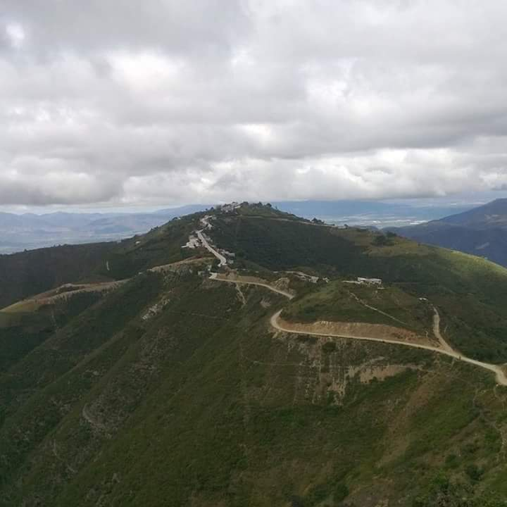
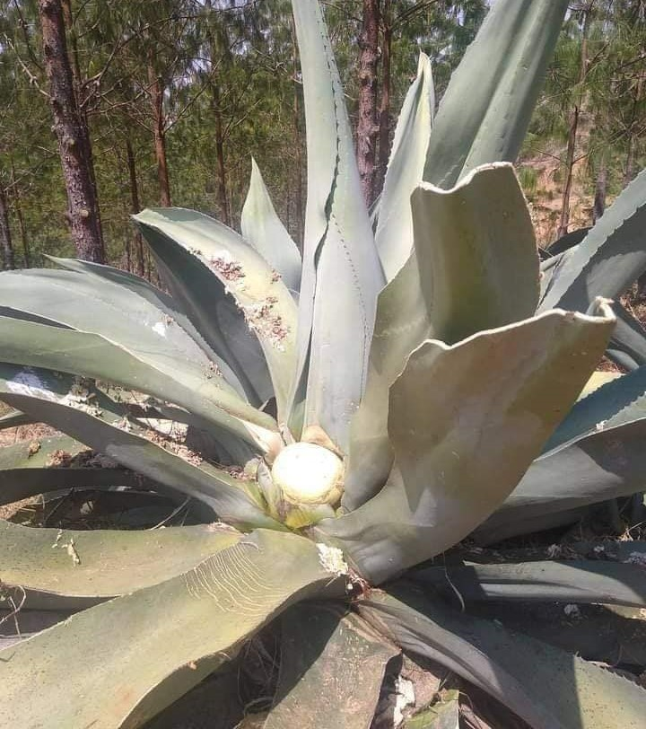
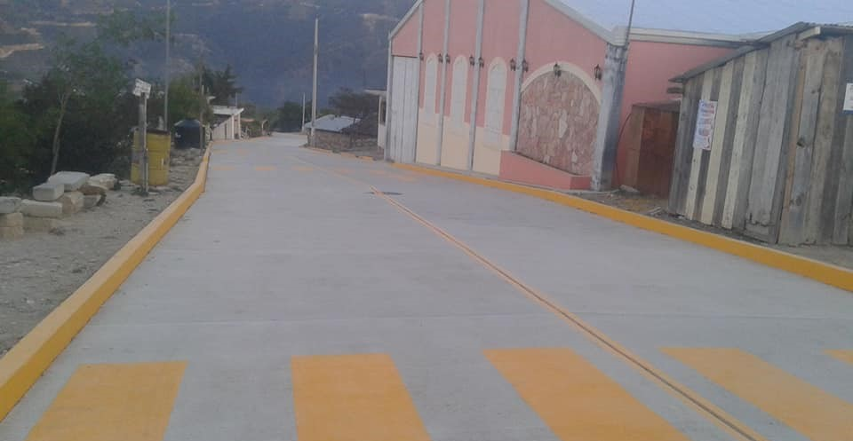
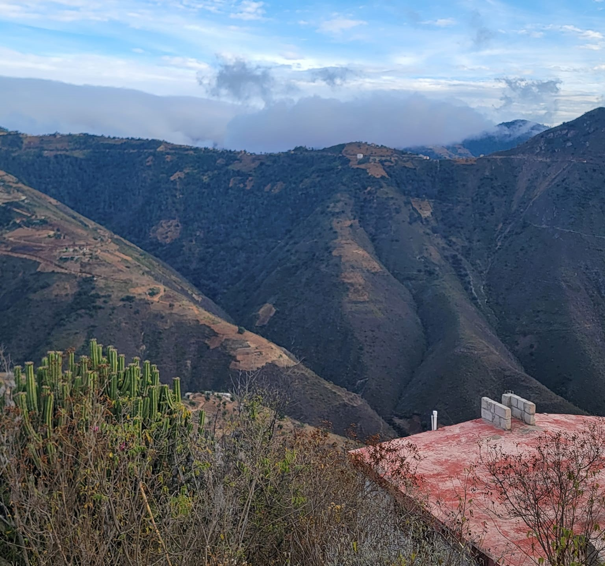
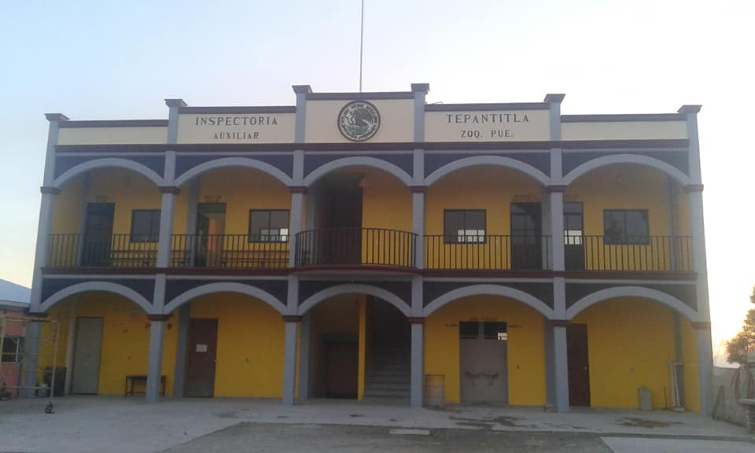
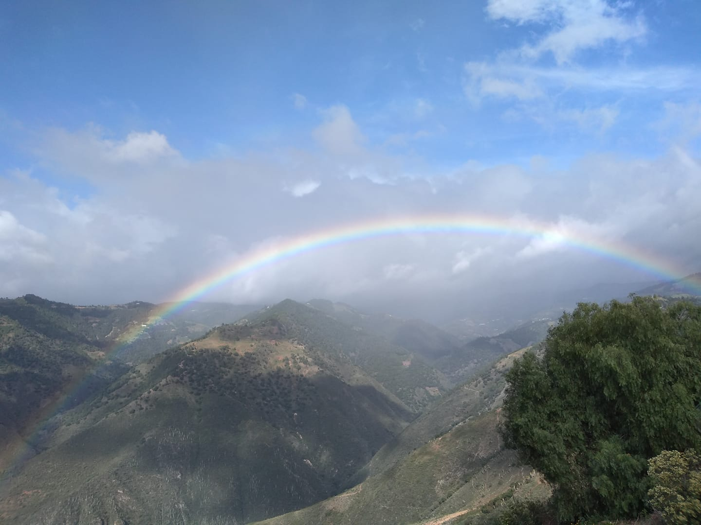
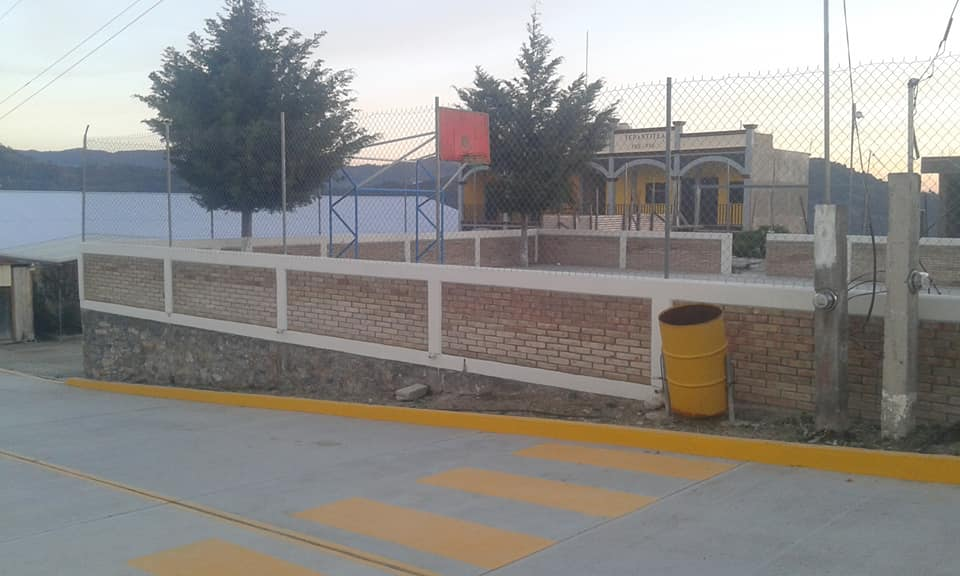
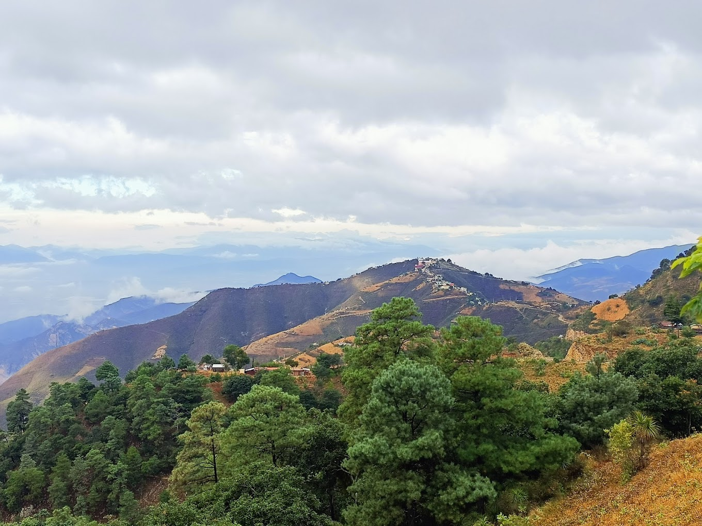
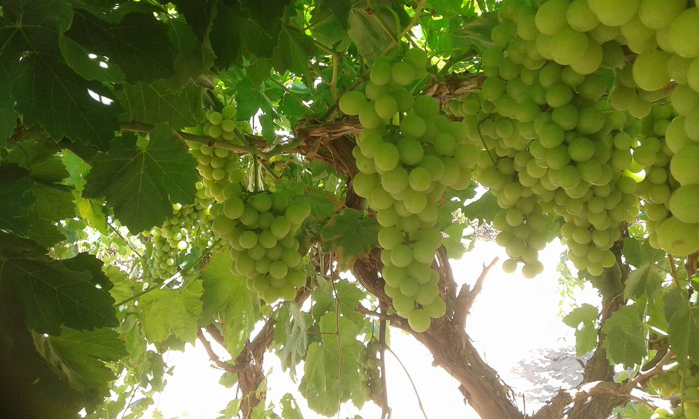

Conoce su Historia

1Historia
El nombre de esta localidad, "Tepantitla", tiene su origen en la lengua náhuatl y se compone de dos elementos principales:
"Tepan": Este término se traduce como "muro" o "lugar amurallado". Sugiere la presencia de estructuras defensivas o recintos fortificados en el pasado. "Titla": Significa "entre" o "en medio". En este contexto, puede referirse a una ubicación específica o a la relación espacial de Tepantitla con otros cercanos.
Por lo tanto, "Tepantitla" se puede interpretar como "lugar entre los muros" o "lugar amurallado". Esto indica la existencia de estructuras defensivas o asentamientos fortificados en la zona durante épocas pasadas.
Galeria







Atractivos Turisticos:

Déjate maravillar por la imponente belleza de Tepantitla, donde los paisajes naturales se funden en armonía.
